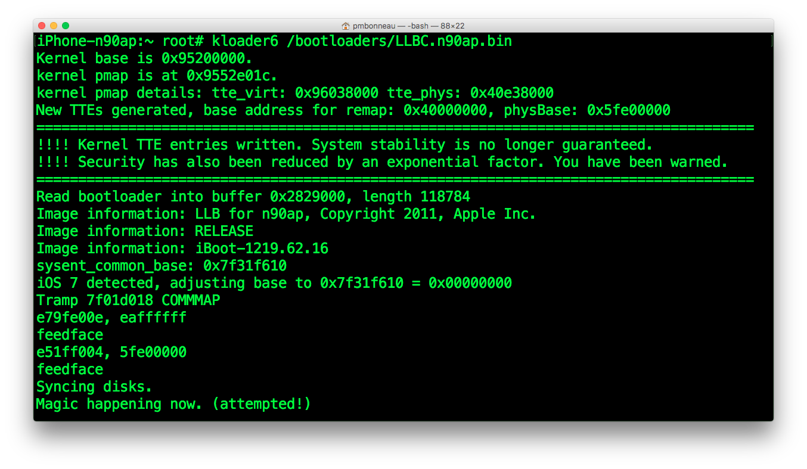

Completing installation
Modify secondary systems fstabDefault iOS fstab looks like this.
/dev/disk0s1s1 / hfs ro 0 1
/dev/disk0s1s2 /private/var hfs,nosuid,nodev rw 0 2
Second line does mount /dev/disk0s1s2 to /private/var/ using HFS filesystem read-write mode.
In the iOS low-level bootchain, iBoot passes boot-args to kernel when jumping to it. There's one boot argument called rd which tells the kernel (PID0) on which partition launchd (PID1) is. The kernel will look for fstab, then proper partitions will be mounted according to options set in this file.
We need to instruct the kernel to boot the right iOS system. To do this, we modify fstab as follow where X represents the partition number.
/dev/disk0s1s[X] / hfs ro 0 1
/dev/disk0s1s[X] /private/var hfs rw 0 2
iphone4-n90ap#nano /SystemB/etc/fstab
/dev/disk0s1s3 / hfs ro 0 1
/dev/disk0s1s4 /private/var hfs rw 0 2
iphone4-n90ap#nano /SystemC/etc/fstab
/dev/disk0s1s5 / hfs ro 0 1
/dev/disk0s1s6 /private/var hfs rw 0 2
Install kernelcache
In iBoot, there are routines dedicated to mount the root device (set by rd boot-arg) and search for a kernelcache in /System/Library/Caches/com.apple.kernelcaches/kernelcach[x]. By default, kernelcache file path is /System/Library/Caches/com.apple.kernelcaches/kernelcache. We patched the path in iBoot to search for a different kernelcache image than the main iOS one (which would not be able to boot because of encryption). Using SCP, upload your decrypted kernelcache (named kernelcach[x], where x corresponds to the secondary iOS identifier) to /System/Library/Caches/com.apple.kernelcaches/. You should have two or more kernelcache files in this directory.
Configure system keybags
System keybag on iOS is usually easy to deal with when there is a single operating system installed on the device. It gets created during the restore process and updated when certain data-protection operations such as changing passcode are performed.
If you manually install iOS from a low-level exploit, you could directly run mksysbag (program that calls MobileKeyBag.framework) from the ramdisk. A new system keybag will be created with its decryption IV + Key stored in the effaceable storage.
There's only one effaceable storage on a device, so it gets shared along all iOS versions installed in a multiboot setup. This complicates things a lot, because new created system keybags will always update effaceable storage by wiping previous system keybag decryption keys.
A workaround we previously did for this issue was to add no-effaceable-storage property to DeviceTree, which tells the keybagd to use a fake key instead of effaceable-storage when creating a new system keybag.
Now, we have to create new system keybags for our secondary iOS versions. The system keybag is stored on user data partition, /private/var/keybags/systembag.kb (from booted environment) or /DataB/keybags/systembag.kb (when mounted).
Install the package mksysbag from my Cydia repository. It will be installed in /usr/bin/ on the main iOS. Copy mksysbag to any secondary iOS that supports no-effaceable storage. In our case, only iOS 6.1.3 does. For 5.1.1, we can't use this method, we will do another workaround instead.
iphone-n90ap#cp -p /usr/bin/mksysbag /SystemB/usr/bin/
We need to make mksysbag to run at the secondary OS first boot, before keybagd tries to read the system keybag. For this, we will setup launchd.conf to run scripts and programs at boot.iphone-n90ap#nano /SystemB/etc/launchd.conf
bsexec .. /usr/bin/mksysbag
Save the new file. We don't set SystemB in our path, because it will becomes / when the OS is booted. Create keybags directory at the root of user data partition for each secondary iOS systems.iphone-n90ap#mkdir /DataB/keybags/
iphone-n90ap#mkdir /DataC/keybags/
Setup LLB images for kloader
If you haven't already did it, create a directory named bootloaders at root of your main iOS system partition.
iphone-n90ap#mkdir /bootloaders
Using SCP, transfert the patched LLB images to /bootloaders on the device. Be sure that the LLB images are a RAW ARM binary image, not packed into a .img3 container because kloader will try to run the img3 header as code. This might cause unexpected behaviour.pmbonneau-mac#scp -P 2022 LLBB.n90ap.bin root@localhost:/bootloaders
pmbonneau-mac#scp -P 2022 LLBC.n90ap.bin root@localhost:/bootloaders
To boot iOS 6.1.3 :
iphone-n90ap#kloader6 /bootloaders/LLBB.n90ap.bin
 To boot iOS 5.1.1 :
To boot iOS 5.1.1 :iphone-n90ap#kloader6 /bootloaders/LLBC.n90ap.bin
 Press home or power button to boot the patched LLB image. It should jump to the patched iBoot (screen light-up), display bootlogo, then boot the kernel.